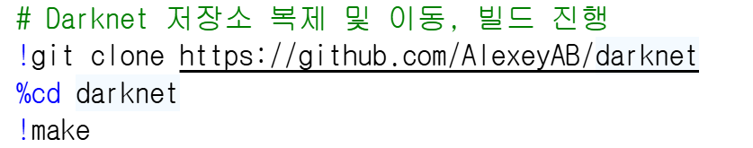
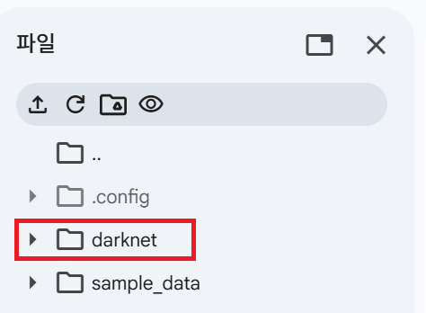
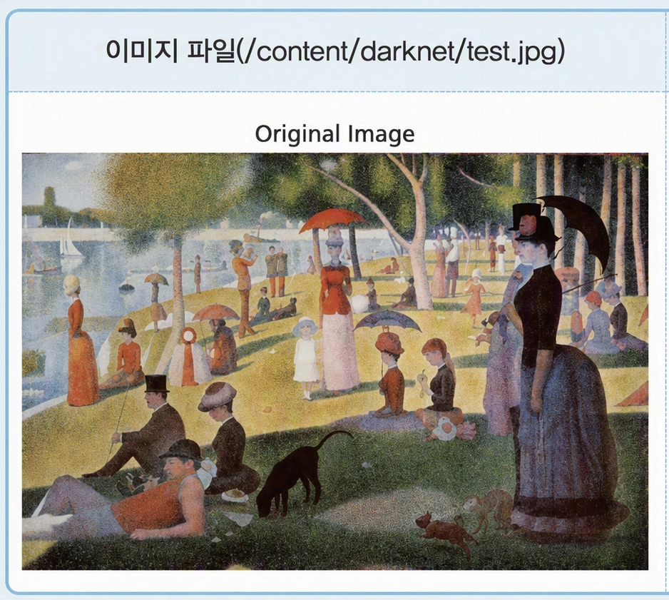

[18차시] YOLO 비전으로 객체 식별
학습 목표
YOLO (You Only Look Once) 비전 모델
- 이미지 전체를 한 번만 보고 객체의 위치와 종류를 동시에 예측하는 실시간 객체 탐지 알고리즘
- 빠른 처리 속도를 가져 자율주행, 실시간 CCTV 분석 등 다양한 분야에서 활용됨.
- Darknet: YOLO 모델을 구현하고 실행하기 위한 인공지능 프레임워크(Framework)
개발자 Joseph Redmon이 만든 신경망 프레임워크의 고유한 프로젝트명, CUDA로 작성된 오픈소스 신경망 프레임워크
실습 과제
[1단계] Darknet 환경 구축하기
- github에서 Darknet 저장소를 복제하고, 코랩 환경에 맞게 빌드
코드 입력_01





| 기호 | 의미 | 주된 용도 | 예시 |
|---|---|---|---|
! | 리눅스 셸 명령 실행 | 패키지 설치, 파일 관리, Git, GPU 확인 | !pip install ..., !ls |
% | IPython 매직 명령 | 코랩 노트북 환경 제어, 경로 이동, 시간 측정 | %cd, %time |
%% | 셀 전체에 적용하는 매직 | 여러 줄 코드/명령에 일괄 적용 | %%time, %%bash |
[2단계] 테스트 이미지 업로드하기
- 탐지하고 싶은 이미지 파일(조르주 쇠라의 ‘그랑드자트섬의 일요일 오후’ 또는 인물이 있는 다른 그림)을 구글에서 검색하여 다운로드하고, 해당 이미지의 이름을
test.jpg로 변경함.
- 코랩 왼쪽 파일 창에서
darknet폴더 내부로test.jpg파일을 드래그앤드롭하거나 업로드함.


[3단계] 사전 학습된 가중치 파일(YOLOv4 Weights) 다운로드
- COCO 데이터셋으로 미리 학습된 YOLOv4 모델 가중치 파일을 다운로드
코드 입력_02

- 결과 확인:
darknet폴더 안에yolov4.weights파일이 정상적으로 다운로드되었는지 확인

[4단계] YOLO 객체 탐지 실행하기
- Darknet 실행 파일을 이용하여 업로드한
test.jpg이미지의 객체 탐지
코드 입력_03

| 명령어 요소 | 의미 |
|---|---|
! | 코랩의 리눅스 명령어 실행 표시 |
./darknet | 현재 폴더에 있는 Darknet 실행 프로그램 |
detector test | 객체 탐지 시험 모드 |
cfg/coco.data | COCO 물체 이름과 관련 정보가 담긴 파일 |
cfg/yolov4.cfg | YOLOv4 모델의 신경망 구조를 정의한 설정 파일 |
yolov4.weights | 학습이 완료된 모델의 가중치 파일 |
-thresh 0.5 | 탐지 확률이 50% 이상인 결과만 출력하도록 설정하는 기준값 |
test.jpg | 분석 대상 이미지 파일 |

mini_batch = 1: 한 번에 처리하는 이미지 수가 1장이라는 의미
batch = 8: 학습 또는 처리 단위와 관련된 설정값
time_steps = 1: 순서 정보가 있는 데이터를 처리할 때 사용하는 설정값이며, 일반 이미지 탐지에서는 크게 중요하지 않은 값
train = 0: 학습 모드가 아니라 테스트 또는 예측 모드라는 의미
[5단계] 원본 이미지와 탐지 결과 비교 시각화
- Python 시각화 라이브러리(
OpenCV,Matplotlib)를 통해 원본 이미지(test.jpg)와 탐지 결과가 반영된 이미지(predictions.jpg)를 나란히 출력
코드 입력_04

| 구분 | 주요 코드 | 설명 |
|---|---|---|
| 라이브러리 불러오기 | import cv2import matplotlib.pyplot as plt | 이미지 관련 작업과 화면 출력에 필요한 도구 상자를 불러오기 |
| 이미지 불러오기 | cv2.imread('test.jpg')cv2.imread('predictions.jpg') | 원본 사진과 AI 예측 결과 사진을 읽어오기 |
| 캔버스 설정 | plt.figure(figsize=(10, 5)) | 전체 도화지 크기를 조절하는 작업 |
| 색상 채널 변환 | cv2.cvtColor(..., cv2.COLOR_BGR2RGB) | OpenCV의 BGR 채널 구조를 Matplotlib 표준 RGB 형식으로 변환 |
| 화면 분할 및 출력 | plt.subplot(1, 2, 1)plt.subplot(1, 2, 2) | 도화지를 반으로 나누어 왼쪽에 원본, 오른쪽에 결과물을 배치 |
| 이미지 및 제목 표시 | plt.imshow(...)plt.title(...) | 각 영역에 사진을 띄우고 어떤 그림인지 이름을 붙여주는 작업 |
| 축 레이블 제거 | plt.axis('off') | 불필요한 눈금과 숫자를 숨겨 이미지를 깔끔하게 보이게 하는 처리 |
| 여백 및 최종 출력 | plt.tight_layout()plt.show() | 제목이나 그림이 겹치지 않게 정돈한 뒤 최종 화면을 모니터에 출력 |

[개별 추가 과제]
| 학번 | 문제 유형 | 추가 실습 과제 | 예상 실행 코드 |
|---|---|---|---|
| 01 | 옵션변경 | 신뢰도 임계값(-thresh) 옵션을 0.5에서 0.2로 변경하여 탐지된 객체의 변화 관찰하기 | !./darknet detector test cfg/coco.data cfg/yolov4.cfg yolov4.weights -thresh 0.2 test.jpg |
| 02 | 옵션변경 | 신뢰도 임계값(-thresh) 옵션을 0.8로 높여 명확한 객체만 탐지되도록 실행해 보기 | !./darknet detector test cfg/coco.data cfg/yolov4.cfg yolov4.weights -thresh 0.8 test.jpg |
| 03 | 모델변경 | 경량화된 모델인 yolov4-tiny.weights를 다운로드하여 탐지 속도 및 결과 비교하기 | !wget [https://github.com/AlexeyAB/darknet/releases/download/darknet_yolo_v4_pre/yolov4-tiny.weights](https://github.com/AlexeyAB/darknet/releases/download/darknet_yolo_v4_pre/yolov4-tiny.weights) |
| 04 | 이미지변경 | 인터넷에서 사람이 여러 명 있는 새로운 이미지를 다운로드하여 test.jpg로 저장 후 객체 탐지하기 | !wget -O test.jpg "[https://example.com/people.jpg](https://example.com/people.jpg)" |
| 05 | 데이터분석 | 탐지 결과 이미지(predictions.jpg)의 가로 및 세로 해상도(픽셀 크기) 출력하기 | print(predicted_image.shape) |
| 06 | 전처리 | 원본 이미지(test.jpg)를 좌우 반전(Flip)시킨 뒤 저장하여 객체 탐지 결과 비교하기 | cv2.imwrite('test.jpg', cv2.flip(original_image, 1)) |
| 07 | 데이터필터링 | 결과 텍스트 파일이나 로그에서 person으로 탐지된 객체의 신뢰도(Confidence) 점수만 출력하기 | !./darknet detector test ... | grep person |
| 08 | 시각화 | 탐지 결과 이미지(predictions.jpg)를 흑백(Gray)으로 변환하여 출력하기 | plt.imshow(cv2.cvtColor(predicted_image, cv2.COLOR_BGR2GRAY), cmap='gray') |
| 09 | 코드구현 | 이미지 로드 실패 시 에러 문구를 출력하고 안전하게 종료되는 예외 처리 코드 작성하기 | if original_image is None: print("파일을 찾을 수 없습니다.") |
| 10 | 시각화 | Matplotlib을 이용하여 원본 이미지와 예측 이미지의 색상 히스토그램(RGB) 비교해 보기 | plt.hist(original_image.ravel(), 256, [0, 256]) |
| 11 | 이미지처리 | 원본 이미지를 흐리게(Blur) 가공한 후 YOLO 모델이 객체를 얼마나 잘 찾는지 테스트하기 | blurred = cv2.blur(original_image, (15, 15)); cv2.imwrite('test.jpg', blurred) |
| 12 | 시각화 | subplot을 1행 2열 대신 2행 1열(상/하) 구조로 변경하여 이미지 출력하기 | plt.subplot(2, 1, 1) 및 plt.subplot(2, 1, 2) |
| 13 | 파일제어 | 코랩의 os 모듈을 이용하여 darknet 폴더 안의 전체 파일 목록 출력하기 | import os; print(os.listdir('.')) |
| 14 | 응용실습 | 자율주행 관련 이미지(도로, 차량, 표지판 등)를 업로드하여 이동 수단 객체 탐지 결과 분석하기 | !./darknet detector test ... car_test.jpg |
| 15 | 미래예측 | COCO 데이터셋의 클래스 정의 파일(cfg/coco.names)을 열어 읽어보고 탐지 가능한 객체 종류 개수 확인하기 | !cat cfg/coco.names | wc -l |